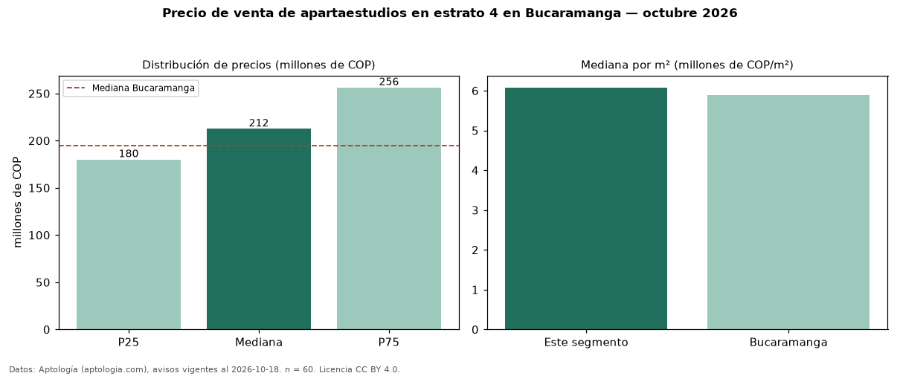

Precio de venta de apartaestudios en estrato 4 en Bucaramanga — octubre 2026
COP 212 millones es el precio mediano de apartaestudios en estrato 4 en venta en Bucaramanga (n = 60 avisos). Eso es 9 % más que la mediana de los apartaestudios en venta de Bucaramanga (COP 195 millones, n = 100); este segmento reúne el 60 % de esos avisos. Por metro cuadrado, la mediana es COP 6,08 millones/m² (n = 59), 3 % por encima de los apartaestudios en venta de Bucaramanga (COP 5,89 millones/m²). El área mediana anunciada es 36 m². La administración mediana declarada es COP 228.000 al mes (n = 53). 93 % de los avisos con el dato declara parqueadero. La mitad central de los avisos va de COP 180 millones a COP 256 millones (razón 1,4), una dispersión moderada. Datos: Aptología (aptologia.com), CC BY 4.0 — https://www.aptologia.com/venta/bucaramanga. Archivos: PDF, CSV con las cifras y gráfica PNG.

| Avisos únicos | 60 |
|---|---|
| Percentil 25 | COP 180.000.000 |
| Mediana | COP 212.500.000 |
| Percentil 75 | COP 256.250.000 |
| Mediana por m² | COP 6.076.923 |
Fuente: avisos vigentes de portales inmobiliarios recopilados por Aptología, deduplicados (mínimo 30 avisos únicos por celda). Precios pedidos, no cerrados. Fecha: 2026-10-18.